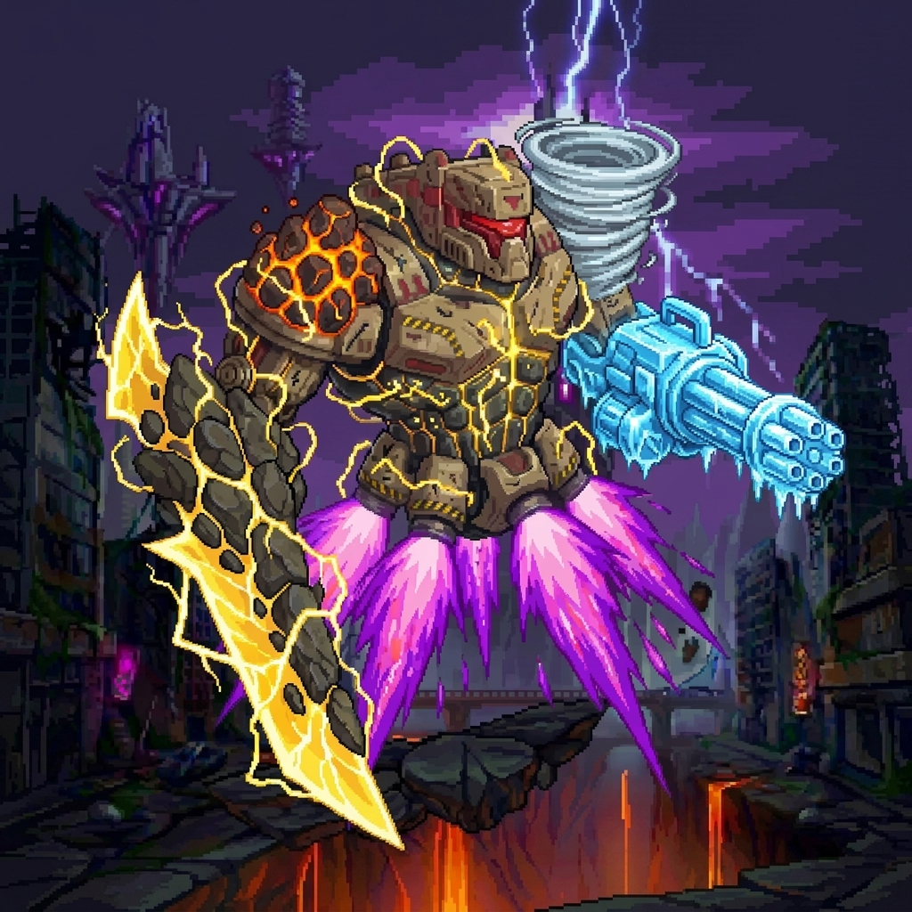

在高聳入雲的新星科技城頂端，曾屹立著這尊被譽為文明之盾的傳奇守衛。當伊格尼斯降臨時，這具機甲雖然失去了運作能源，但其不屈的防禦姿態卻贏得了火龍的極致欣賞。伊格尼斯並沒有摧毀這件完美的工藝品，而是將始祖龍焰作為新的動力源，灌入其能源核心。隨著紅蓮之火的點燃，守衛者零式從長眠中甦醒。
它不僅繼承了火龍那焚盡萬物的暴戾力量，更因其原本具備的多環境作戰系統，獲得了操控風、雷、冰、岩五大元素的至高權能。它的機械身軀會根據戰場態勢不斷重組武裝，時而化作狂暴的炎之鐵拳，時而化作冷酷的冰之機槍。它是火龍最引以為傲的傑作，守護著通往最終決戰的最後一道關卡——在那全能的武裝之下，任何凡人的勇氣都顯得微不足道。
守衛者零式瞬間啟動體內的「雷」與「岩」雙重環境權能，將原本厚重的雙臂裝甲強制解體並重組，化作兩柄閃爍著高壓電漿與堅硬岩石結晶的巨型臂刃。它以極具壓迫感的節奏向前推進並發動連續斬擊：首先揮動左臂，劈出一道撕裂空氣的雷岩刃氣；緊接著右臂以雷霆萬鈞之勢反向揮出第二擊。最後，零式將雙臂高舉，引擎噴發至極限，以開山裂地之勢將雙刃交叉斬下。三道狂暴的劍氣在空中疊加，化作一道毀滅性的巨型交錯斬擊，以摧枯拉朽之勢將前方的一切生命與裝甲切成碎塊。
描述： 當左臂的雷刃劃破狂風，大地的岩層亦將為之剝落。在此『破陣』的劍氣前，汝等的先鋒防禦不過是一觸即碎的朽木。
視覺感： 守衛者零式猛烈地向內側揮動左臂，一道巨大的、呈現彎月狀的黃藍色「雷岩劍氣」呼嘯而出。這道劍氣邊緣纏繞著高壓電弧，並夾帶的大量被震碎的岩石碎塊，展現出沉重且銳利的起手壓迫感。
描述： 「當右臂的重擊緊隨而至，周遭的空氣都被這股狂暴的質量所排擠。在此『斷空』的雷霆中，感受機神連擊的無間窒息感吧。
視覺感： 在第一擊的劍氣尚未完全消散之際，零式的右臂緊接著以雷霆萬鈞之勢反向揮出。同樣的彎月形黃藍色劍氣再次噴湧而出，但這次的軌跡與前一擊形成致命的交錯，封鎖了目標的閃避空間。
描述： 連擊的終焉，即是萬象的判決。當雙刃交叉，雷霆與重岩的能量將引發臨界點的崩壞。在此『十字極刑』之下，化為科技城歷史中一抹無名的灰燼吧！
視覺感：零式雙臂爆發出最大功率，隨後，它將雙臂的霆岩巨刃高舉並交叉，帶著摧毀一切的氣勢猛然斬下。兩道巨大的劍氣在脫離刃尖的瞬間完美嵌合，形成一道體積驚人、散發著耀眼雷光與岩石碎屑的「X字型毀滅波」。
描述： 「這是來自天空之主的絕對衝擊。當嵐槍揚起，大氣亦將化為汝等的牢籠。零式以肉眼難以捕捉的高速向前推動，衝鋒軌跡上留下半透明的風痕與震動特效，將「萬象守衛」那堅不可摧卻又迅猛如風的霸道感展現得淋漓盡致。
視覺感：守衛者零式機械身軀被一團狂暴的翠綠色光芒包圍。左手伸出一柄巨大的、由白色旋轉氣流構成的螺旋長槍，槍尖不斷灑落像素化的碎石殘影；右手則持握著一面具備厚重感的風壓盾牌，盾牌四周圍繞著數個小型龍捲風特效。
描述： 這是來自寂滅之地的冷酷宣告。當加特林的轟鳴被寒風掩蓋，萬物的律動皆將歸於沉寂。在此『寒淵』的洗禮下，溫暖已成奢求，唯有在晶瑩的死境中，感受生命徹底凍結的終末。
視覺感： 守衛者零式 軀體被一層冰藍色的極寒氣流所包裹，肩膀與關節處生長出稜角分明的巨大冰晶簇。其左手持握的重型加特林槍管高速旋轉，前方噴湧出密集的極地穿甲彈，以扇形陣列橫掃戰場。
描述： 「這是來自火龍傑作的終極暴戾。當紅蓮的意志升空，天空亦將降下毀滅的淚滴。
視覺感：守衛者零式全身的機械裝甲呈現出過熱的亮橘色，體表流淌著粘稠的熔岩，背後的推進器噴發出極度強烈的火焰氣流。牠穩固身軀，雙拳連續向上揮擊，每一拳皆在空中拉拽出紅蓮火焰的殘影，將一顆顆能量球送入天際。隨後，從空中隨機砸落下數顆表面嵌有熔岩紋路且被烈火包覆的熔岩巨拳。
描述： 這是來自萬象機神的憤怒咆哮。當紫色的閃光映入眼簾，汝之命運便已在瞬息間定格。在此『震天拳』的殘影下，感受何謂絕對的速度與武力，在雷鳴中徹底瓦解吧！
視覺感：守衛者零式全身裝甲縫隙因紫電過載而透出危險的光芒，雙拳被巨大的球狀紫色雷光特效完全包覆。隨著零式快速的揮拳動作，數枚紫電拳影呼嘯而出。這些拳影在半空中錯落有致地前進。